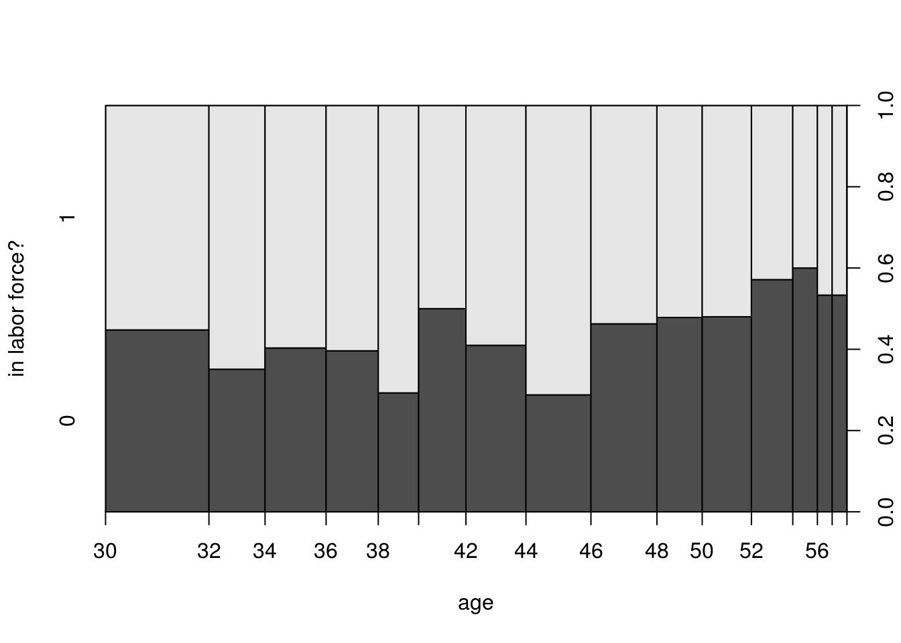
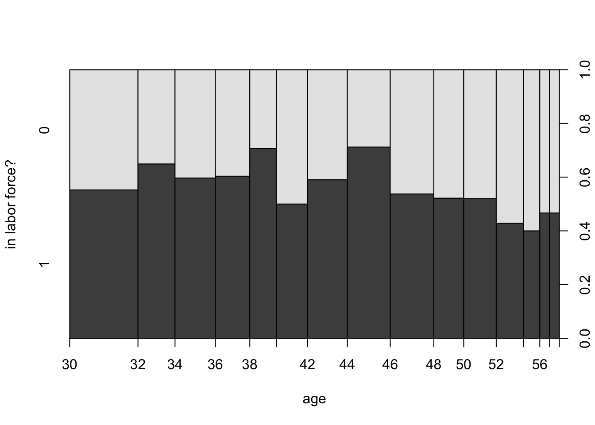
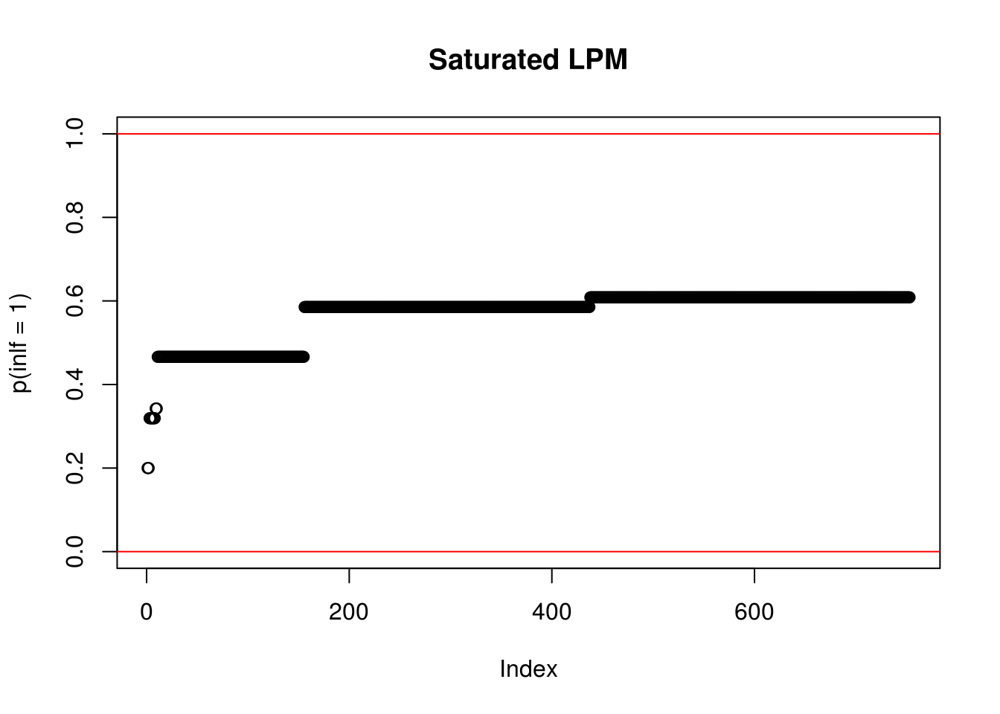

Chapter 13 Binary Outcomes
Until now we have encountered only contiunously distributed outcomes on the right hand side of our estimation equations. For example, in our typical linear model, we would define
\[\begin{align} y &= b_0 + b_1 + e \\ e &\sim N\left(0,\sigma^2\right) \end{align}\]where the second line defines the unobservable \(e\) to be drawn from the Normal distribution with mean zero and variance \(\sigma^2\).17 That means that, at least in principle, \(y\) could be any number from the real line (\(e\) could be arbitrarily small or large), and we can say that \(y \in \mathbb{R}\).
For the outcomes we studied, that was fine: test scores, earnings, crime rates etc are all continuous outcomes. But some outcomes are clearly binary (i.e. either TRUE or FALSE):
- You either work or you don't,
- You either have children or you don't,
- You either bought a product or you didn't,
- You flipped a coin and it came up either heads or tails.
In this situation, our outcome is restricted to come from a small set of values: FALSE vs TRUE, or 0 vs 1. We'd have \(y \in \{0,1\}\). In those situations we are primarily interested in estimating the response probability or the probability of success,
\[ p(x) = \Pr(y=1 | x), \] or in words, the probability to observe \(y=1\) (a success), given explanatory variables \(x\). In particular, we will often be interested in learning how \(p(x)\) changes as we change \(x\) - that is, we are interested in the same partial effect of \(x\) on the outcome as in our usual linear regression setup. Here, we ask
If we increase \(x\) by one unit, how would the probability of \(y=1\) change?
It is worth reminding ourselves about two simple facts about binary random variables (i.e drawn from the Bernoulli distribution). So, we call a random variable \(y \in \{0,1\}\) such that
\[\begin{align} \Pr(y = 1) &= p \\ \Pr(y = 0) &= 1-p \\ p &\in[0,1] \end{align}\]a Bernoulli random variable. In our setting, we just condition those probabilities on a covariate \(x\), as above - that is, we measure the probability given that \(X\) takes value \(x\):
\[\begin{align} \Pr(y = 1 | X = x) &= p(x) \\ \Pr(y = 0 | X = x) &= 1-p(x) \\ p(x) &\in[0,1] \end{align}\]Of particular interest for us is the fact that the expected value (i.e. the average) of \(Y\) given \(x\) is
\[ E[y | x] = p(x) \times 1 + (1-p(x)) \times 0 = p(x) \]
There are several ways to model such binary outcomes. Let's look at them.
13.1 The Linear Probability Model
The Linear Probability Model (LPM) is the simplest option. In this case, we model the response probability as
\[ \Pr(y = 1 | x) = p(x) = \beta_0 + \beta_1 x_1 + \dots + \beta_K x_K \tag{13.1} \] Our interpretation is slightly changed to our usual setup, as we'd say a 1 unit change in \(x_1\), say, results in a change of \(p(x)\) of \(\beta_1\).
Estimation of the LPM as in equation (13.1) can be performed by standard OLS. Let's look at an example. The Mroz (1987) dataset let's us female labor market participation. How does a woman's inlf (in labor force) status depend on non-wife household income, her education, age and number of small children? First, let's look at a quick plot that shows how the outcome varies with 1 variable, age say:
data(mroz, package = "wooldridge")
plot(factor(inlf) ~ age, data = mroz,
ylevels = 2:1,
ylab = "in labor force?")
Not so much variation with respect to age, except for the later years. Let's run the LPM now:
LPM = lm(inlf ~ nwifeinc + educ + exper
+ I(exper^2) + age +I(age^2) + kidslt6, mroz)
summary(LPM)##
## Call:
## lm(formula = inlf ~ nwifeinc + educ + exper + I(exper^2) + age +
## I(age^2) + kidslt6, data = mroz)
##
## Residuals:
## Min 1Q Median 3Q Max
## -0.94194 -0.37773 0.08935 0.34283 0.97979
##
## Coefficients:
## Estimate Std. Error t value Pr(>|t|)
## (Intercept) 0.3219554 0.4863667 0.662 0.50820
## nwifeinc -0.0034271 0.0014531 -2.358 0.01861 *
## educ 0.0374662 0.0073476 5.099 4.33e-07 ***
## exper 0.0382568 0.0057700 6.630 6.44e-11 ***
## I(exper^2) -0.0005649 0.0001895 -2.981 0.00296 **
## age -0.0011177 0.0225100 -0.050 0.96041
## I(age^2) -0.0001822 0.0002581 -0.706 0.48044
## kidslt6 -0.2603675 0.0340826 -7.639 6.72e-14 ***
## ---
## Signif. codes: 0 '***' 0.001 '**' 0.01 '*' 0.05 '.' 0.1 ' ' 1
##
## Residual standard error: 0.4273 on 745 degrees of freedom
## Multiple R-squared: 0.2637, Adjusted R-squared: 0.2568
## F-statistic: 38.13 on 7 and 745 DF, p-value: < 2.2e-16You can see that this is identical to our previous linear regression models - with the exception that the outcome inlf takes on only two values, 0 or 1. The results from this: if non-wife income increases by 10 (i.e 10,000 USD), the probability of being in the labor force falls by 0.034 (that's a small effect!), whereas an additional small child would reduce the probability of work by 0.26 (that's large). So far, so simple.
One often-mentioned problem of this model is that fact that nothing restricts our predictions of \(p(x)\) to be proper probabilities, i.e. to lie in the unit interval \([0,1]\). You can see that quite easily here:
pr = predict(LPM)
plot(pr[order(pr)],ylab = "p(inlf = 1)")
abline(a = 0, b = 0, col = "red")
abline(a = 1, b = 0, col = "red") This picture tells you that for quite a few observations, this model predicts a probability of working which is either greater than 1, or smaller than zero. This may or may not be a big problem for your analysis. If you only care about marginal effects (i.e. the \(\beta\)s, that may be ok, if you want actual predictions than that's problematic).
In the case of a saturated model - if we only have dummy explanatory variables - then this problem does not exist for the LPM:
library(dplyr)
LPM_saturated = mroz %>%
mutate(age_fct = cut(age,breaks = 3),
huswage_fct = cut(huswage, breaks = 2)) %>%
lm(inlf ~ age_fct + huswage_fct, data = .)
pr = predict(LPM_saturated)
plot(pr[order(pr)],ylab = "p(inlf = 1)",ylim = c(0,1),
main = "Saturated LPM")
abline(a = 0, b = 0, col = "red")
abline(a = 1, b = 0, col = "red")
13.2 Nonlinear Binary Response Models
In this class of models we change the way we model the response probability \(p(x)\). Instead of the simple linear structure from above, we write
\[ \Pr(y = 1 | x) = p(x) = G \left(\beta_0 + \beta_1 x_1 + \dots + \beta_K x_K \right) \tag{13.2} \] You note that this is almost identical, only that the entire sum \(\beta_0 + \beta_1 x_1 + \dots + \beta_K x_K\) is now inside some function \(G(\cdot)\). The main property of \(G\) is that it can transform any value \(z\in \mathbb{R}\) you give it to a number in the interval \((0,1)\). This immediately solves our problem of getting weird predictions for probabilities. The two most widely used forms of \(G\) are the probit and the logit model. here are both forms for \(G\) in one plot:
library(ggplot2)
ggplot(data.frame(x = c(-5,5)), aes(x=x)) +
stat_function(fun = pnorm, aes(colour = "Probit")) +
stat_function(fun = plogis, aes(colour = "Logit")) +
theme_bw() +
scale_colour_manual(name = "Function G",values = c("red", "blue")) +
scale_y_continuous(name = "Pr(y = 1 | x)")Figure 13.1: The Probit and Logit functional forms for binary choice models
You can see that
- any value \(x\) results in a value \(y\) between 0 and 1
- the higher \(x\), the higher the resulting \(p(x)\).
13.2.1 Interpretation of Coefficients
Let's run the Mroz example from above in both probit and logit now:
probit <- glm(inlf ~ age,
data = mroz,
family = binomial(link = "probit"))
logit <- glm(inlf ~ age,
data = mroz,
family = binomial(link = "logit"))
modelsummary::modelsummary(list("probit" = probit,"logit" = logit))| probit | logit | |
|---|---|---|
| (Intercept) | 0.707 | 1.136 |
| (0.248) | (0.398) | |
| age | -0.013 | -0.020 |
| (0.006) | (0.009) | |
| Num.Obs. | 753 | 753 |
| AIC | 1028.9 | 1028.9 |
| BIC | 1038.1 | 1038.1 |
| Log.Lik. | -512.442 | -512.431 |
From this table, we learn that the coefficient for age is -0.013 for probit and -0.02 for logit, respectively. In both cases, this tells us that the impact of an additional yeaer of age on the probability of working is negative. However, we cannot straightforwardly read off the magnitude of the effect. Why is that?
One simple way to see this is to look back at figure 13.1 and imagine we had just one explanatory variable (like here - age).
Here is why.
glm_logitmfx = logitmfx(glm_logit, atmean = TRUE, data = mtcars)
We have not insisted too much on the fact that \(e\) should be distributed according to the Normal distribution (this is required in particular for the theoretical derivation of standard errors as seen in chapter 6). However, we'd always have an unbounded and continuous distribution underlying our models↩